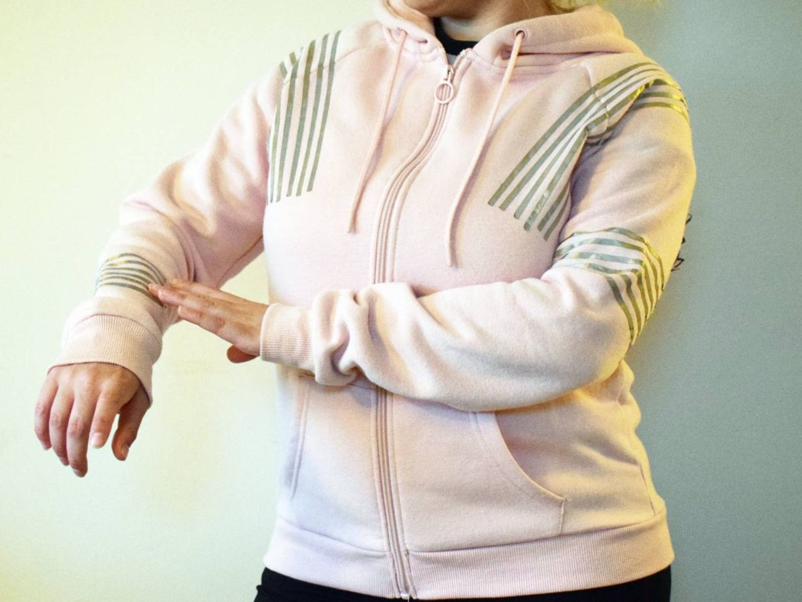
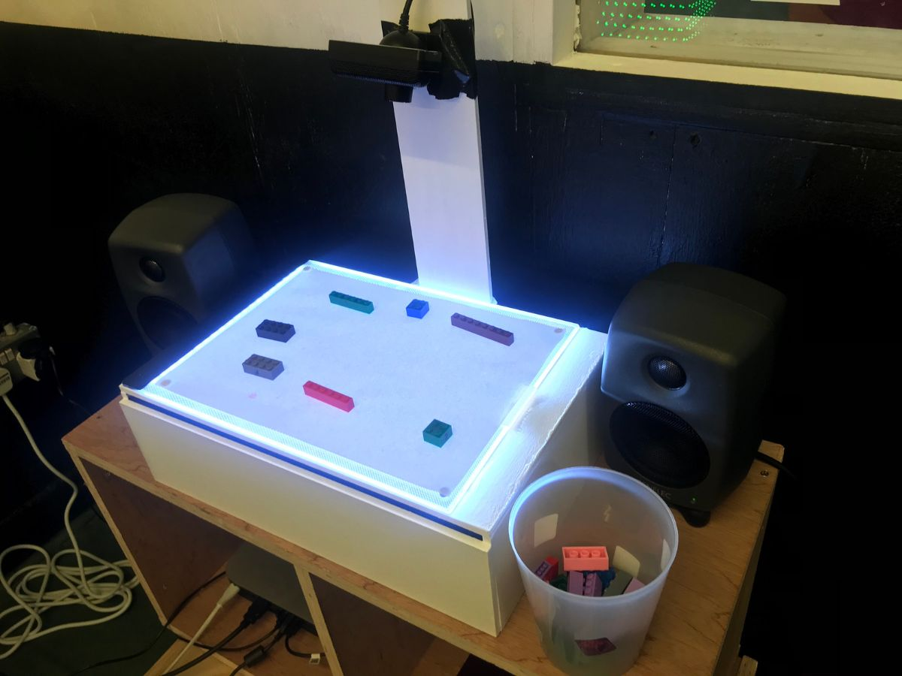

Digital Arts Installations
Sonical Touchable
The Sonic Jacket is a wearable musical instrument that explores musical expression through body touch. Inspired by the composition "Sonically Touchable," it delves into the theme of touch and its varying meanings based on context. During performances, the artist improvises with the Sonic Jacket through a blend of dance and theatrical movements, interpreting touch in three distinct ways: caring, exploratory self-awareness, and violent, unwanted contact.
The composition "Sonically Touchable" uses recorded poem recitations as its sonic material, presenting its concept through the processing and manipulation of spoken words.
Future work aproaches the use of haptic feedback for the enhencemnt of the interaction with the musical instrument.
Presented at Goldsmiths Graduation Show 2020 "Chimara Garden", poem: Astrophil and Stella, Sonnet 9 by Philip Sidney performer and contributor: Dr Christina Kapadocha.
Performed at Iklektic "Forms in Flux" 2021, poam: "Nothing at all" by Joan Poee
Blocks' Sounds
Blocks’ Sound is an interactive installation, which calls participants to compose their own music by positioning little blocks on a specified white area. This installation transforms the traditional musical notation into a playful tactile experience where Blocks are the notes that participants can simply move across the board and alter the synthesis of the score. The perceptual experience begins from the moment participants hold a block on their hand. That action generates questions about the sonic feedback of each individual block as well as of the assemblage of the blocks that are on the table each time. As this ongoing interactive composition evolves, during the time of this exhibition, every change to a brick’s position will contribute to the alteration of the sonic feedback giving participants a unique agency over this process.
This piece has been presented in Goldsmiths University Pop-up Show 2019, Hack and Scratch 2020, and Peckam Digital 2021
Arcade Percussion

Augmenting accoustic Instruments with sensors, This 3D printed rice box have been augmented with movement sensors that create retro synth sounds.
This piece has been presented in Goldsmiths University Pop-up Show 2020
Draw and Listen

"Draw and Listen" is an interactive audio-visual installation where participants use physical brushes to create virtual drawings on a projected white canvas using three colors. The motion of their brush in the air translates into digital art, with each brushstroke generating corresponding sounds, resulting in a unique ambient music composition. This installation explores the impact of human actions on nature, using the transition of sound from pure to mechanistic to symbolize how simple individual actions can disturb the natural world.
By examining the texture of sound, this installation addresses the influence of human interference on nature. Simple actions, represented by drawing—a fundamental skill learned early in life—illustrate how these actions can disrupt the environment, with sound processing shifting from pure to mechanistic/granulated to reflect nature's response.
This piece has been presented in Goldsmiths University Pop-up Show 2020